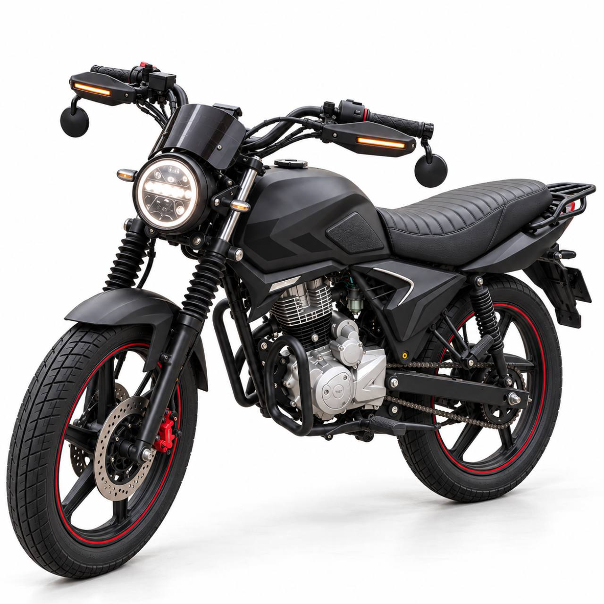
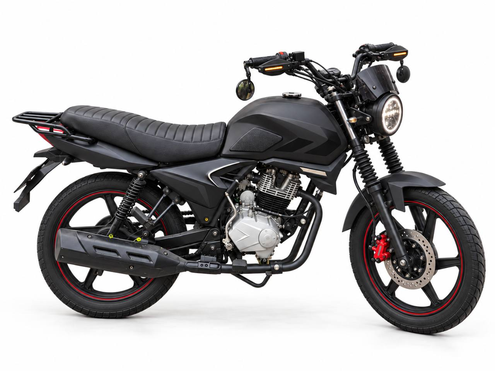
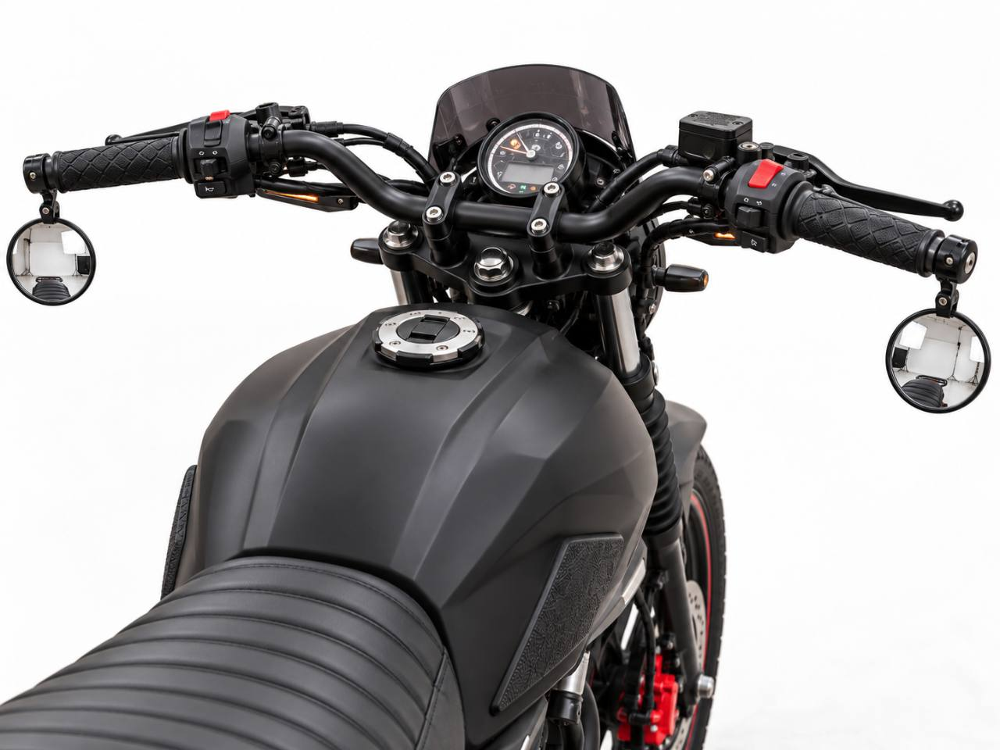

Hane / Cafe Racer
Cubrepolvos anunciados en $150 y espejos bar-end en $469. Ofrece entregas personales en CDMX y Línea A; no publica local fijo.
Ver catálogo ↗55 6431 2785ITALIKA DT150 SPORT 2021 · INSTALACIÓN PROPIA
Negro mate, frente circular y detalles sobrios. Compara cada pieza y arma tu lista de compra sin pagar instalación.
Explorar las 14 partidasPrecios de referencia consultados el 2 de noviembre de 2026.

ELIGE QUÉ COMPRAR
Cambia la alternativa, ajusta cantidades o desmarca lo que ya tienes. Tu selección se guarda en este navegador.
No hay piezas con esos filtros. Prueba otra búsqueda.
TODO LO INSTALAS TÚ
El total combina los precios seleccionados con las provisiones que decidas reservar. No incluye reparaciones mecánicas, baúl ni herramientas que aún no tengas.
Precios orientativos, no pedido realizado ni cotización de taller. Confirma presentación, color, año y medidas antes de pagar.
COMPARAR SIN PAGAR ENVÍOS INNECESARIOS
Contactos y puntos de venta publicados por los propios comercios. Consulta precio, venta al público y existencia antes de trasladarte.
Cubrepolvos anunciados en $150 y espejos bar-end en $469. Ofrece entregas personales en CDMX y Línea A; no publica local fijo.
Ver catálogo ↗55 6431 2785Regina 144, Centro Histórico, Cuauhtémoc. El directorio anuncia lunes a sábado de 8:30 a 18:30. Pregunta por el slider Match 0217700026 y gomas compatibles.
Directorio oficial ↗Abrir mapa ↗Av. San Pablo 46, local E-Bis, Centro, Cuauhtémoc. Horario publicado: lunes a sábado de 8:30 a 18:30. Lleva las medidas y una foto del anclaje.
Directorio oficial ↗Abrir mapa ↗Para compras pequeñas, compara recogida en sucursal. En tapicería pide material negro de uso exterior: una tela de vestir barata no garantiza resistencia al sol o lluvia.
Consultar sucursales desde el artículo ↗Comparar tela y presentación ↗Son búsquedas orientativas, sin precio ni entrega confirmados para México. No se suman al carrito. Compara el importe final con impuestos y envío, la cantidad de piezas y la variante negra.
Cubrir todos los paneles del mismo tono. Conservar la espuma de doble plaza; las líneas horizontales necesitan costura y material adecuado. El vinil cambia el color, no la forma del tanque.
Medir faro, soporte del tablero y minicúpula. Espejos y cubrepuños suelen ocupar el mismo extremo: presenta ambos antes de comprarlos. Revisar giro completo, visibilidad y retorno del acelerador.
El slider comercial no reproduce el arco de las imágenes. No cortar o soldar el chasis para adaptarlo. Los fuelles deben permitir todo el recorrido de la horquilla y no ocultar una fuga pendiente.

